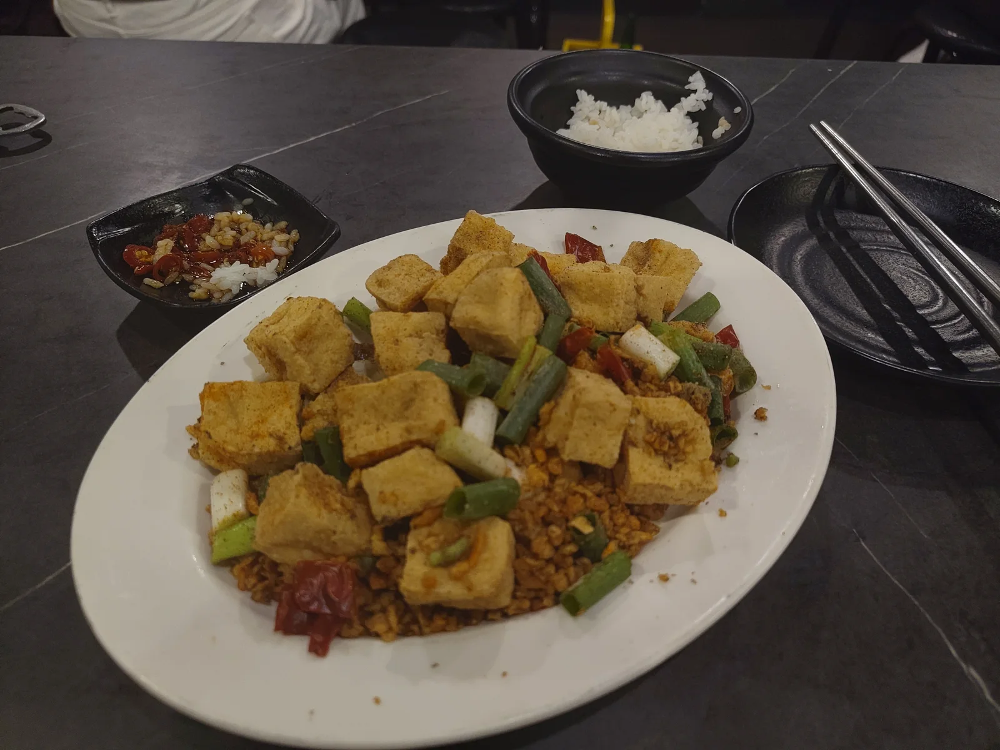

13 August 2026

This is the (appropriately named I might add) stinky tofu, one of the signature dishes of Taiwan. I ate it at a very popular and bustling restaurant with a wonderful atmosphere, but realized soon after ordering that I only had enough cash on me to cover the meal itself, not including anything to drink. “Not a problem” I thought. “I’ll go and have something to drink afterwards”. Lets just say I was practically running to the 7-eleven next door after paying.